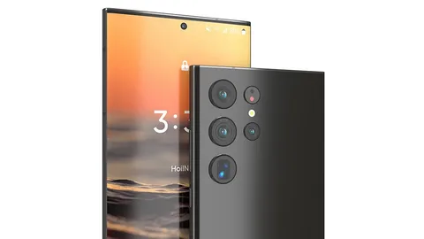

Samsung Group («Самсунг Груп», кор. 삼성그룹, Samseong Gurub, Samsŏng Gurup) — южнокорейская группа компаний, один из крупнейших чеболей, основанный в 1938 году. Samsung Group владеет долей в наиболее известной компании группы -- публичной компании Samsung Electronics, известной как производитель смартфонов, интегральных микросхем, телекоммуникационного оборудования, бытовой техники, аудио- и видеоустройств. Главный офис компании расположен в Сеуле. Слово «Самсунг» (кор. 삼성?, 三星?, более правильная передача слова по нормам практической транскрипции [самсон]) в корейском языке означает «три звезды». Возможна связь такого названия с тремя сыновьями основателя Samsung Ли Бён Чхоля (이병철), младший из которых Ли Гон Хи (иногда его имя пишется Ли Кун Хи — калька с английского: Lee Kun-hee) (이건희) возглавил компанию в 1987 году в нарушение всех восточных традиций наследования, в согласии с которыми старший сын наследует большую часть семейной собственности[1]. Выручка Samsung в 2019 году составила 305 миллиардов долларов, в 2020 году — более 107 миллиардов долларов, а в 2021 году — 236 миллиардов долларов.[2]
